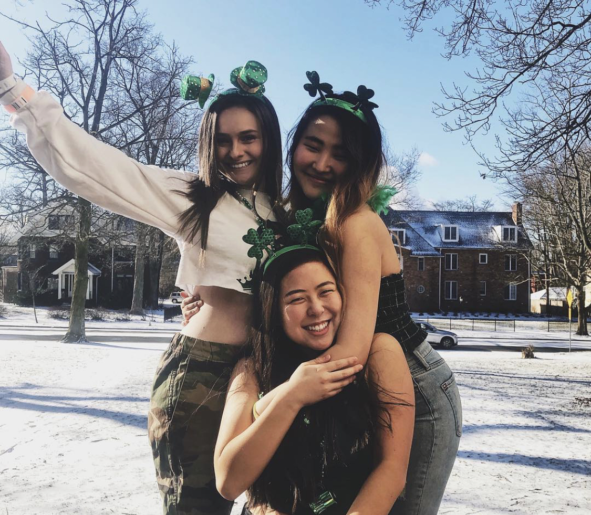

About Me!
My name is Mary and I am a junior at the University of Michigan studying Information Science with a concentration in Information Analysis and Business Administration.
I am extremely passionate about cooking and living a healthy lifestyle and decided to create this page to document my journey in the kitchen.
Growing up, my grandmother taught me how to cook and I always loved lending her a hand in the kitchen for family meals and events.
I was also very active growing up, and played sports most of my life, so fueling my body with good food was always important to me.
These two factors are what inspired me to become passionate about creating healthy recipes in the kitchen and I love sharing my creations.
I love experimenting in the kitchen and creating recipes that allow me to feel my best. Even if I am not the most talented chef in the kitchen,
cooking and baking have always been my favorite hobby and I am so excited to share some of the things I've created.
I hope you enjoy my page!